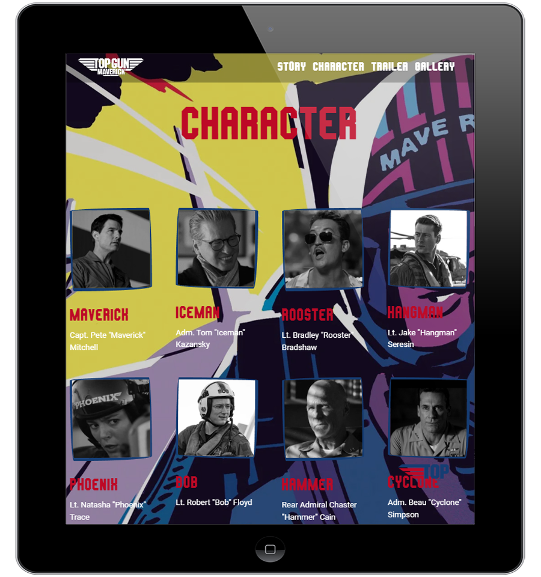
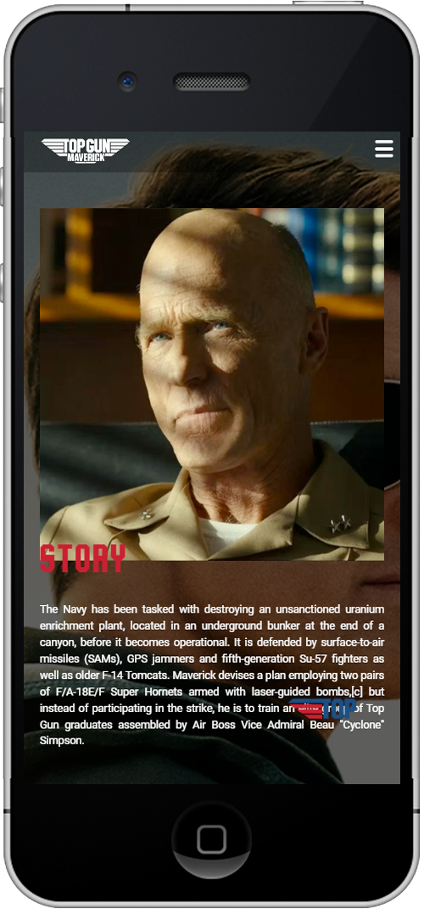
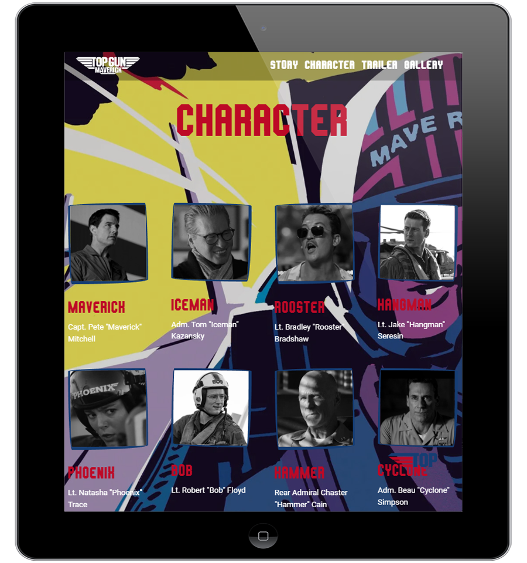
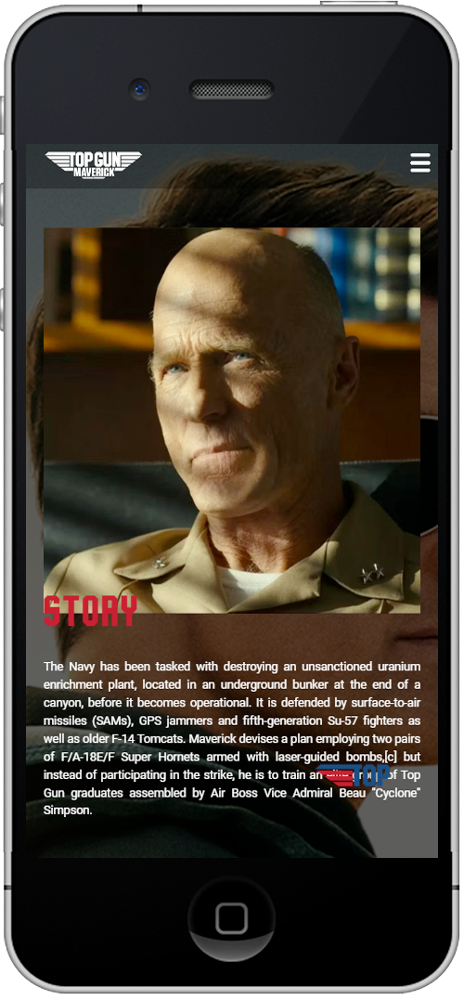

안녕하세요
김준현입니다.
안녕하세요
김준현입니다.

기존 xhtml방식으로 구현된 금호건설 기업 홈페이지 pc버전을 html5/css3를 사용하여 최신 트렌드를 반영한 디자인으로 새롭게 구현했습니다. 또한 이미지로 표현되어있던 텍스트와 이미지 alt누락 등의 문제점을 웹표준과 접근성을 준수한 방식으로 개선하였습니다.
Visit SitePC용으로 구현된 기업형 세스코 기업 홈페이지를 모바일 기기에 적합한 UI를 적용하여 새롭게 구현한 모바일용 웹사이트입니다. 마우스가 아닌 사용자의 터치 이벤트를 중점적으로 구현했으며, PC버전과는 다르게 사용자 경험을 고려하여 간략화된 컨텐츠와 메뉴로 구성하였습니다.
Visit Site 



영화 탑건을 주제로한 반응형 웹사이트입니다. 다양한 미디어 컨텐츠를 활용하고 기기별 해상도에 최적화된 UI로 구성하여 사용자가 폭 넓게 이용할 수 있도록 반응형 웹을 구축했습니다.
Visit Site
워드프레스의 테마와 플러그인을 사용하여 브랜드 컨셉에 맞는 디자인과 레이아웃을 보다 간편하고 빠르게 구현했습니다.
Visit Site